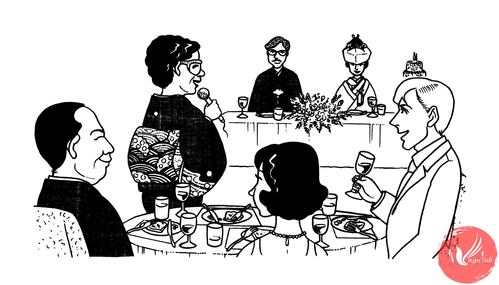

| 学長： |
ワットさん、いずみさん、ご結婚 おめでとうございます。乾杯。 |
| 皆： |
乾杯 |
| ----------------- | |
| 司会者： |
次に こちらの 皆さんに ひとことずつ お願いします。 |
| 松本良子： |
わたしは 去年の 夏の クラスで ワット先生に 英語を 教えて いたたきました。 先生の 授業は ユーモアがあって、楽しかったです。 実は その クラスに いずみさんも いらっしゃったんです。
|
| 大学職員： |
わたしは 先生に 「上手な 整理の 方法」と いう 本を いただきました。 先生は 整理するのが上手で、研究室は いつも きれいです。 きっと お二人の お宅も すてきだと 思います。 |
| ミラー： |
ワットさん、今度は 「すてきな 人と 結婚する 方法」 という 本を 書いて くださいませんか。 ぜひ よんで、勉強したいです。どうぞ お幸せに。
|